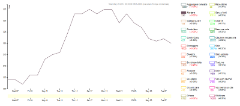

Lo scopo di questo progetto è fornire un supporto visuale alle statistiche di manutenzione di Wikipedia in italiano, prestando particolare attenzione agli avvisi di servizio presenti nelle voci. Con grafici lineari e a barre, numeri e percentuali, sarà possibile avere una più chiara consapevolezza delle dinamiche del lavoro sporco.
Per visualizzare i grafici è possibile utilizzare Chrome, Firefox, Internet Explorer (versione 10 e successive), Opera o Safari.
|  |
Lavoro sporco: grafici relativi all'andamento degli avvisi di servizio. Modifiche: grafici relativi agli edit divisi per tipologia ed utente. Dimensioni voci: grafici relativi alle fasce di dimensione delle voci. Numero pagine: grafici relativi al numero di pagine divise per namespace. Varie: grafici vari. |